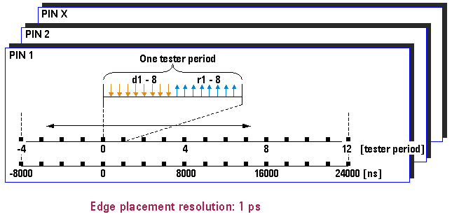

Edge Ranges
You program an edge delay for every edge relative to the start of the test system cycle. (See the definition of a test system cycle in Device Cycles.) The ranges for edge movement are - 4 to + 12 test system cycles and - 8,000 ns to + 24,000 ns.
All edges of the same direction have to occur within one period range. This limitation does not apply to drive edges that have been assigned the action "hold". They still have to remain within the absolute range, however.
A test system cycle has the length of one period. Edges may be positioned over the test system cycle boundary. This is called cycle boundary crossing.
Edge placement resolution is 1 ps.
